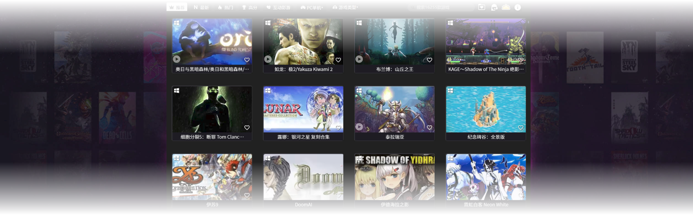

将跨平台的所有游戏整理为一个功能完善且美观的统一游戏库
喜欢就翻，即刻下载！
发现优质单机游戏，享受无广告纯净下载体验。GameFlip 1.0 为您精选最新最热门的单机游戏，一键下载，畅玩无限！
即刻下载超过 1,000 玩家正在使用
GameFlip 目前仅支持 Windows 8 及以上版本，暂不支持 macOS
"好的游戏应成为连接的桥梁，而非隔绝的围墙。" ——小岛秀夫
将跨平台的所有游戏整理为一个功能完善且美观的统一游戏库
将各平台的游戏下载源整合到一个总库，分类 / 搜索 / 筛选一次搞定。
已收录 16000+ 款，覆盖 PC 与 Switch，每天持续更新，新作与更新包及时同步。
游戏视频轻松预览：鼠标悬停即可查看关键片段，喜不喜欢一目了然。
推荐 / 最新 / 热门 / 高分 / 专题应有尽有，轻松掌握当下流行度与最新作品；独立的真人影游专题，第一时间更新。
下载不限次数、无需验证；搜索秒级响应，想要什么搜什么；看到喜欢的直接收藏，稍后再下载。
运行并更新你的 GameFlip 游戏的最佳方式
每一张游戏卡片，集实机视频预览、下载、收藏与信息于一体。
摒弃层层页面与繁琐流程，极简界面，上手即用。
支持输入即搜的瞬时搜索，无次数限制、几乎零等待。
每天自动更新最新游戏数据，并以玩家口碑（rating）、媒体评分（metacritic）、平均时长（playtime）、热度指数与精选优先度（PrimeRank）驱动智能推荐与排序。
我们将定期发布更新版本，让 GameFlip 持续进化。
基于用户反馈及时修复问题并完善细节，同时优化与迭代各项功能。
每一次发布都以稳定与效率为目标，带来更流畅、更可靠的运行表现。
GameFlip 是一款桌面应用，用于更快捷、便捷地下载与管理游戏。游戏库每日自动更新，始终保持最新内容。
GameFlip 负责下载与管理，会在更新新作的同时同步旧作更新包。
目前覆盖并持续稳定更新 PC 与 Switch 的游戏资源。
仅供学习与交流使用，切勿用于任何商业用途。
我们每日自动统计来自公开平台与权威评测来源的多维数据（如热度、好评度等），生成推荐、最新、热门、高分等榜单：
推荐：综合流行度与口碑排序；
最新：按发布日期优先，更新日期其次；
热门：近一段时间的热度趋势；
高分：根据评分与样本量加权。
如果一时没有目标，可先从推荐开始探索。
悬停即看视频：在游戏卡片上悬停即可预览实机片段，喜不喜欢一目了然。
专注核心信息：摒弃冗余详情，以真实视频与关键数据帮助决策。
权威数据汇总：结合多家专业评测与公开平台数据，生成各类榜单（推荐/最新/热门/高分）。
卡片式交互：下载、收藏、预览都在一张卡片完成；看到喜欢的先收藏，有空再下。
搜索秒级响应：想要什么，搜一下就有；下载不限次数、无需额外验证。
会。我们致力于提供稳定可靠的版本体验；若遇到问题，请联系我们，我们会尽快修复。
请发送邮件至 GameFlipX@hotmail.com，我们会尽快回复你。
缺少.NET 8.0 Desktop Runtime桌面应用必备组件，下载链接带有.NET 8.0 Desktop Runtime组件，按需选择x86或者x64即可。
| 推广方式 | 要求 | 奖励时长 |
|---|---|---|
| 基础互动 | 点击这里观看官方宣传视频，B站上关注官方账号，浅夏游戏无限玩，并点赞/评论第一个置顶视频 | 1天 |
| 轻量分享 | 在 小红书 发布一条图文/笔记，或在 B站 发布体验动态（≥1张截图 + 体验文字） | 7天 |
| 使用演示 | 上传一条 ≥30秒视频（录屏/口播均可），展示 GameFlip 的使用过程，并附关键词"GameFlip" | 1个月 |
| 深度测评 | 发布 ≥2分钟测评/教程视频（B站）或 ≥5图详细笔记（小红书），讲解功能和体验 | 3个月 |
| 重度推广 | 单条作品达到 1000播放/100点赞/100收藏 | 永久使用（名额有限，前30名） |
让玩家高效、安全地获取优秀游戏，同时通过系统化的游戏设计拆解，把"为什么好"的底层逻辑讲清楚——
既能玩到更多，更能学会如何做。
我们相信：工具让好内容触达你，方法让你成为更好的创作者。
我们是一支兼具产品研发与内容研究的团队：
工具线｜GameFlip 1.0：专注稳定下载、极简交互与持续更新，让获取游戏像一次顺滑的启动。
内容线｜设计拆解：由策划/程序/美术联合撰写，从机制、数值到体验，输出可复用的设计方法论。
我们用一个好工具与一套好方法，服务玩家与创作者：
今天玩得更好，明天做得更好。
GameFlipX@hotmail.com
中国广东省广州市